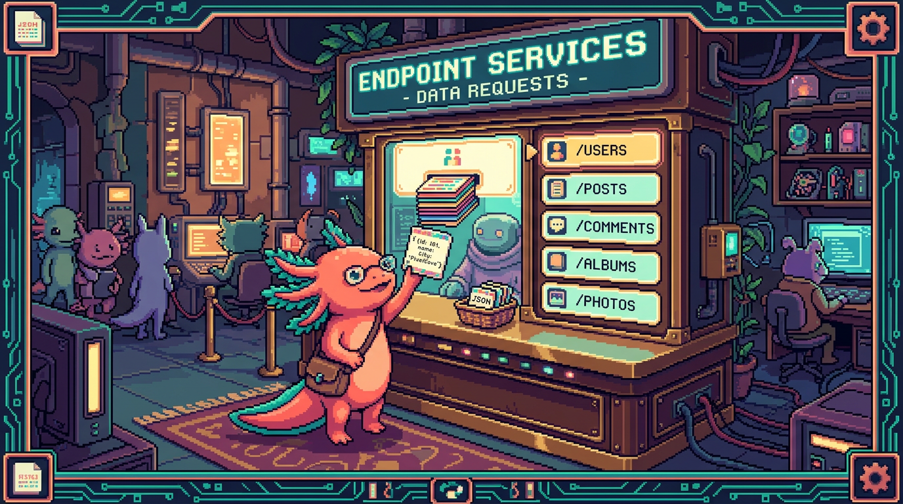

Capitulo 07 — APIs REST y JSON a fondo

Hola otra vez. Soy Bit, el ajolote que te acompana en este manual. En el modulo 03 aprendiste
fetchy en el modulo 07 viste bases de datos. Hoy vamos a juntar las piezas: vamos a entender de verdad que es una API REST, como se piden y devuelven datos, y por que el formato JSON esta en todas partes. Lo haremos con calma, definiendo cada palabra rara. Y al final veras como Faro habla con GitHub y Google Drive, y como tunal-digital habla con la IA de Claude. Respira: esto es mas sencillo de lo que suena. Vamos.
1. Empecemos por la idea: cliente y servidor conversando
Cuando tu navegador pide una pagina, o tu app pide datos, estan ocurriendo dos papeles: alguien pide y alguien responde. El que pide es el cliente; el que responde es el servidor. Una API es la lista de cosas que puedes pedir y como pedirlas.
🟦 ¿Que significa? — API
API son las siglas de Application Programming Interface (Interfaz de Programacion de Aplicaciones). Es un menu de un restaurante: una lista de lo que puedes pedir y como pedirlo, sin que tengas que entrar a la cocina. Sirve para que dos programas se hablen sin conocer sus interioridades. Donde se usa en un repo real: Faro pide la lista de repositorios de un usuario a la API de GitHub; nunca entra a los servidores de GitHub, solo usa el "menu" que GitHub publica.
🟦 ¿Que significa? — Cliente y servidor
El cliente es quien hace la peticion (tu app, tu navegador). El servidor es el programa, en otra computadora, que recibe la peticion y devuelve una respuesta. Sirve para repartir el trabajo: el cliente pinta la pantalla, el servidor guarda y entrega los datos. Donde se usa en un repo real: en RachaSimple (React + TypeScript + Supabase) el cliente es la app React en el navegador, y el servidor es Supabase, que guarda las rachas y valida el login.
💡 Tip
Piensa siempre en voz alta: "yo (cliente) pido X; el servidor me responde Y". Si tienes claro quien pide y quien responde, la mitad del problema ya esta resuelta.
2. Que es REST, con calma
La palabra REST suena tecnica, pero la idea es tranquila: es una manera de organizar una API para que sea predecible. En vez de inventar nombres raros para cada operacion, REST dice: "todo es un recurso (una cosa), cada cosa tiene una direccion (URL), y usas unos pocos verbos estandar para actuar sobre ella".
🟦 ¿Que significa? — REST
REST (Representational State Transfer) es un estilo para disenar APIs sobre HTTP. No es una libreria ni un programa: es un acuerdo de buenas costumbres. Sirve para que cualquier programador adivine como usar la API sin memorizar mil casos especiales. Donde se usa en un repo real: la API de GitHub que consume Faro es REST: para ver un repo pides
GET /repos/usuario/proyecto, y se lee casi como una frase.🟦 ¿Que significa? — HTTP
HTTP (HyperText Transfer Protocol) es el idioma que usan cliente y servidor en la web para hablarse. Define como se ve una peticion y como se ve una respuesta. Sirve como la "gramatica" comun de internet. Donde se usa en un repo real: cuando tunal-digital envia el mensaje del chat al servidor, viaja por HTTP hasta el Cloudflare Worker.
🟦 ¿Que significa? — Recurso
Un recurso es una "cosa" que la API maneja: un usuario, un repositorio, un archivo, un mensaje. Sirve para pensar la API como un conjunto de objetos identificables, no como un monton de funciones sueltas. Donde se usa en un repo real: en Faro, un "repositorio" y un "archivo de Drive" son recursos; cada uno tiene su propia direccion para pedirlo.
Los verbos de HTTP
REST usa unos pocos verbos (tambien llamados metodos) para decir que quieres hacer con un recurso.
🟦 ¿Que significa? — Metodo HTTP (verbo)
Es la accion que pides sobre un recurso. Los mas comunes: GET (leer), POST (crear o enviar), PUT/PATCH (actualizar) y DELETE (borrar). Sirve para que el servidor sepa tu intencion sin que se la expliques en palabras. Donde se usa en un repo real: Faro usa
GETpara leer tus repos de GitHub; tunal-digital usaPOSTpara enviar el mensaje del usuario a la IA, porque esta "enviando datos" para que la IA responda.💡 Tip
Regla mental rapida: si solo quieres mirar datos, casi siempre es
GET. Si vas a mandar datos (un formulario, un mensaje de chat), suele serPOST.
3. Endpoints y rutas: las direcciones de la API
Cada recurso vive en una direccion. A esa direccion la llamamos endpoint o ruta.
🟦 ¿Que significa? — Endpoint (ruta)
Un endpoint es una URL concreta de la API que hace una cosa. Es como la direccion de una casa: si tocas ahi, te atienden para ese asunto. Sirve para organizar la API en puntos de entrada claros. Donde se usa en un repo real: Faro llama al endpoint
https://api.github.com/user/repospara traer la lista de repositorios del usuario conectado.
Una URL de API se lee por partes. Mira esta:
https://api.github.com/repos/edwar/Faro/contents/README.md
https://→ protocolo (HTTP seguro).api.github.com→ el host: el servidor al que le hablamos./repos/edwar/Faro/contents/README.md→ la ruta: que recurso queremos.
🟦 ¿Que significa? — Host
El host es el nombre del servidor al que envias la peticion (la parte despues de
https://y antes de la primera/). Sirve para que internet sepa a que computadora entregar tu peticion. Donde se usa en un repo real: en tunal-digital el host de la IA es el del Cloudflare Worker; el navegador nunca habla directo conapi.anthropic.com(ya veremos por que, es por seguridad).🔎 En tu codigo
Cuando escribas
fetch("https://api.github.com/user/repos"), ese texto largo es el endpoint. No es magia: es solo la direccion exacta de la cosa que quieres. Cambia la ruta y pides otra cosa.
4. Parametros de ruta y query params
A veces la direccion necesita un dato variable. Hay dos formas de pasarlo: dentro de la ruta o pegado al final con ?.
🟦 ¿Que significa? — Parametro de ruta
Es un trozo variable dentro de la ruta que identifica un recurso concreto. En
/repos/edwar/Faro, las partesedwaryFaroson parametros de ruta: dicen de quien y cual repo. Sirve para apuntar a un elemento especifico. Donde se usa en un repo real: Faro arma rutas como/repos/{owner}/{repo}/contentsrellenandoowneryrepocon el proyecto que el usuario eligio.🟦 ¿Que significa? — Query params (parametros de consulta)
Son opciones que van al final de la URL despues de un
?, en formaclave=valor, separadas por&. Sirven para filtrar, ordenar o paginar sin cambiar el recurso. Son como decir "lo mismo, pero ordenado por fecha y de a 10". Donde se usa en un repo real: Faro puede pedirGET /user/repos?sort=updated&per_page=20para traer los repos ordenados por ultima actualizacion y de 20 en 20.
Ejemplo comparando los dos:
Parametro de ruta: /repos/edwar/Faro
^^^^^ ^^^^ (que recurso)
Query params: /user/repos?sort=updated&per_page=20
^^^^^^^^^^^^ ^^^^^^^^^^^ (como lo quiero)
🟦 ¿Que significa? — Filtrar
Filtrar es pedirle al servidor que solo te devuelva los datos que cumplen una condicion, en vez de todos. Sirve para recibir menos datos y mas utiles. Suele hacerse con query params (ej:
?state=open). Donde se usa en un repo real: al revisar issues, Faro podria pedir solo las abiertas con?state=open, para no traer las cerradas.⚠️ Cuidado
Los query params se ven en la URL. Nunca pongas ahi una clave secreta ni una contrasena: quedaria registrada en logs y en el historial del navegador. Los secretos viajan de otra forma (lo veremos en la seccion de seguridad).
💡 Tip
Los caracteres raros (espacios, acentos,
&) hay que "escaparlos" en una URL. En JavaScript usaencodeURIComponent("texto con espacios")para construir query params sin romper la direccion.
5. El formato JSON, a fondo
Cuando el servidor responde, te manda los datos en un formato de texto. El mas usado hoy es JSON. Ya lo viste de pasada; ahora lo vamos a entender pieza por pieza.
🟦 ¿Que significa? — JSON
JSON (JavaScript Object Notation) es un formato de texto para representar datos de forma ordenada: objetos con
{}, listas con[], paresclave: valor. Sirve para que dos programas (en cualquier lenguaje) intercambien datos que ambos entienden. Donde se usa en un repo real: PolyPaw (Python/Flet) guarda sus misiones y datos en archivos JSON; y la API de GitHub le responde a Faro en JSON.
Asi se ve un JSON (una respuesta simplificada de la API de GitHub):
{
"name": "Faro",
"full_name": "edwar/Faro",
"private": false,
"stargazers_count": 12,
"language": "TypeScript",
"topics": ["nextjs", "supabase", "openai"],
"owner": {
"login": "edwar",
"type": "User"
}
}
Vamos a nombrar cada parte:
🟦 ¿Que significa? — Objeto JSON
Un objeto es un grupo de datos entre llaves
{ }, formado por pares clave-valor. La clave (a la izquierda de:) es un texto entre comillas; el valor (a la derecha) es el dato. Sirve para describir "una cosa" con sus propiedades. Donde se usa en un repo real: cada repositorio que Faro recibe de GitHub llega como un objeto conname,language, etc.🟦 ¿Que significa? — Clave y valor
La clave es el nombre de un dato (ej:
"language"); el valor es su contenido (ej:"TypeScript"). Sirven para que cada dato tenga etiqueta y no se confundan entre si. Donde se usa en un repo real: Faro lee la clavelanguagepara mostrar en que lenguaje esta escrito cada proyecto.🟦 ¿Que significa? — Array (lista)
Un array es una lista ordenada de valores entre corchetes
[ ], separados por comas. Sirve para guardar varias cosas del mismo tipo (varios temas, varios archivos). Donde se usa en un repo real: en el JSON de arriba,"topics": ["nextjs", "supabase", "openai"]es un array de etiquetas del proyecto.🟦 ¿Que significa? — Anidamiento
Anidar es meter un objeto o array dentro de otro. En el ejemplo,
owneres un objeto dentro del objeto principal. Sirve para representar datos con estructura (una cosa que contiene otra cosa). Donde se usa en un repo real: Faro accede arepo.owner.loginpara saber de quien es el repositorio; eseowneresta anidado.
Tipos de valor que admite JSON
JSON solo permite estos tipos de valor. Memoriza la lista corta:
- Texto (string): entre comillas dobles, ej
"Faro". - Numero: sin comillas, ej
12o3.5. - Booleano:
trueofalse(verdadero/falso), sin comillas. - Nulo:
null(significa "no hay valor"). - Objeto:
{ ... }. - Array:
[ ... ].
⚠️ Cuidado
En JSON las claves siempre van entre comillas dobles
", nunca simples'. Y no se permite coma despues del ultimo elemento. Un solo error de estos hace que el JSON sea invalido y el programa falle al leerlo.
De texto a objeto y de vuelta
JSON viaja como texto, pero en tu codigo lo quieres como objeto para usar .name, .language, etc. JavaScript tiene dos funciones para convertir.
🟦 ¿Que significa? — Serializar y parsear
Serializar es convertir un objeto de tu codigo en texto JSON (
JSON.stringify). Parsear es lo contrario: convertir texto JSON en un objeto usable (JSON.parse). Sirven para enviar datos por la red (texto) y luego trabajarlos comodos (objeto). Donde se usa en un repo real: tunal-digital serializa el mensaje del usuario a JSON antes de enviarlo, y parsea la respuesta de la IA para mostrarla en el chat.
// De objeto a texto JSON (para enviar):
const cuerpo = JSON.stringify({ mensaje: "Hola IA" });
// De texto JSON a objeto (al recibir):
const respuesta = await fetch("/api/chat", {
method: "POST",
headers: { "Content-Type": "application/json" },
body: cuerpo,
});
const datos = await respuesta.json(); // parsea el JSON por ti
console.log(datos.reply); // ahora puedes usarlo como objeto
🔎 En tu codigo
Fijate en
await respuesta.json(). Ese metodo.json()hace elJSON.parsepor ti: toma el texto de la respuesta y te entrega un objeto listo para usar. Por eso despues puedes escribirdatos.reply.🟦 ¿Que significa? — Header (cabecera)
Un header es un dato extra que acompana la peticion o la respuesta, en forma
clave: valor, para dar contexto (que formato envias, quien eres). Sirve para informar al servidor sin meterlo en el cuerpo. Donde se usa en un repo real: Faro y tunal-digital mandanContent-Type: application/jsonpara avisar "te estoy enviando JSON", y un header de autorizacion para identificarse.
6. El contrato entre cliente y servidor
Aqui esta la idea mas importante del capitulo. Una API es un contrato: un acuerdo de que pide el cliente y que devuelve el servidor.
🟦 ¿Que significa? — Contrato de API
Es el acuerdo de como se comunican cliente y servidor: que ruta llamar, que metodo usar, que datos enviar y que forma exacta tendra la respuesta. Sirve para que ambos lados puedan trabajar por separado confiando en lo prometido. Donde se usa en un repo real: RachaSimple confia en que Supabase Auth devolvera un objeto de sesion con cierta forma al hacer login; si esa forma cambiara, el login se romperia. Ese acuerdo es el contrato.
Las dos partes del contrato son: la peticion (lo que mandas) y la respuesta (lo que recibes). La respuesta trae un dato clave: el codigo de estado.
🟦 ¿Que significa? — Codigo de estado (status code)
Es un numero que el servidor pone en la respuesta para decir como le fue. Familias: 2xx = exito, 4xx = error del cliente (tu peticion estaba mal), 5xx = error del servidor. Sirve para reaccionar correctamente sin adivinar. Donde se usa en un repo real: si Faro recibe
401de GitHub significa "no autorizado" (token vencido); si recibe200significa "aqui tienes tus datos".
Codigos que veras seguido:
- 200 OK → todo bien, aqui esta la respuesta.
- 201 Created → se creo el recurso (tras un
POST). - 400 Bad Request → enviaste algo mal formado.
- 401 Unauthorized → no te identificaste o tu credencial no sirve.
- 403 Forbidden → te identificaste, pero no tienes permiso.
- 404 Not Found → ese recurso no existe.
- 429 Too Many Requests → pediste demasiado, demasiado rapido.
- 500 Internal Server Error → algo se rompio del lado del servidor.
const respuesta = await fetch("https://api.github.com/user/repos");
if (respuesta.ok) { // .ok es true si el status es 2xx
const repos = await respuesta.json();
console.log("Tengo", repos.length, "repos");
} else if (respuesta.status === 401) {
console.error("Token invalido o vencido, hay que reconectar GitHub");
} else {
console.error("Algo salio mal:", respuesta.status);
}
💡 Tip
respuesta.okes un atajo: valetruecuando el codigo es 2xx. Pero revisar el numero exacto (como401) te deja dar mensajes mas utiles al usuario.⚠️ Cuidado
fetchno lanza error cuando el servidor responde 404 o 500. Parafetch, recibir una respuesta de error sigue siendo "recibir una respuesta". Por eso debes mirarrespuesta.okorespuesta.statusa mano. No asumas que llegaste alawait respuesta.json()solo porque no exploto nada.
7. Versionado de APIs
Las APIs cambian con el tiempo. Para no romper a quienes ya las usan, se versionan.
🟦 ¿Que significa? — Versionado de API
Es marcar la API con un numero o fecha de version (ej
/v1/) para que los cambios nuevos no rompan el codigo viejo. Sirve para evolucionar sin dejar tirados a los que ya integraron la version anterior. Donde se usa en un repo real: la API de Claude que usa tunal-digital se identifica con una version (un header tipoanthropic-versioncon una fecha); asi el Worker sabe exactamente con que "edicion" del contrato esta hablando.
Veras la version de dos formas tipicas:
- En la ruta:
https://miapi.com/v1/usuarios(lav1salta a la vista). - En un header: un encabezado como
anthropic-version: 2023-06-01.
💡 Tip
Cuando leas la documentacion de una API, fijate primero en que version estas mirando. Un ejemplo de
/v1/no funcionara igual si la doc abierta es de/v2/.
8. Paginacion
Si pides "todos los repos" y hay 5000, el servidor no te los manda de golpe: te los da por paginas. Eso es paginar.
🟦 ¿Que significa? — Paginacion
Es partir un resultado grande en trozos (paginas) y entregarlos de a poco. Sirve para no saturar la red ni la memoria, y para que la app cargue rapido. Suele controlarse con query params como
pageyper_page. Donde se usa en un repo real: Faro pide los repos de GitHub paginados (?per_page=30&page=1, luegopage=2...) para no descargar cientos de repos de una sola vez.🟦 ¿Que significa? — per_page y page
per_pagedice cuantos elementos por pagina;pagedice que pagina quieres. Juntos sirven para recorrer un resultado grande en partes manejables. Donde se usa en un repo real: Faro usaper_pagepara limitar el tamano de cada lote ypagepara avanzar al siguiente.
// Traer la pagina 2, de 30 en 30:
const url = "https://api.github.com/user/repos?per_page=30&page=2";
const repos = await (await fetch(url)).json();
🟦 ¿Que significa? — Rate limit (limite de peticiones)
Es el maximo de peticiones que la API te deja hacer en cierto tiempo. Sirve para proteger al servidor de abusos. Si lo superas, responde
429. Donde se usa en un repo real: por su filosofia de refresco bajo demanda, Faro analiza solo cuando el usuario lo pide; eso ayuda a no pegarle de mas a GitHub y respetar su rate limit.⚠️ Cuidado
No hagas un bucle que pida pagina tras pagina sin freno: puedes chocar contra el rate limit (
429) o agotar la cuota. Pide solo lo que vas a mostrar, justo cuando lo necesitas.
9. Leer la documentacion de una API
Nadie memoriza las APIs: se leen. La documentacion (o "docs") es el manual de instrucciones. Saber leerla es una de las habilidades mas utiles que te llevas de este capitulo.
🟦 ¿Que significa? — Documentacion (docs)
Es el manual que publica quien hace la API: lista de endpoints, metodos, parametros, ejemplos de peticion y de respuesta. Sirve para saber exactamente que pedir y que esperar, sin adivinar. Donde se usa en un repo real: para integrar la IA, tunal-digital sigue la documentacion de la API de Claude/Anthropic; para los repos, Faro sigue la documentacion de la API de GitHub.
Cuando abras unas docs, busca en este orden:
- El endpoint: la URL y el metodo (
GET /user/repos). - Autenticacion: como te identificas (suele ser un header).
- Parametros: de ruta y query params, con cuales son obligatorios.
- Ejemplo de peticion: copialo y adaptalo.
- Ejemplo de respuesta: mira la forma del JSON para saber que claves leer.
- Errores: que codigos puede devolver y que significan.
💡 Tip
Casi todas las docs traen un "ejemplo con
curl".curles una herramienta de linea de comandos para hacer peticiones. Aunque tu usesfetch, el ejemplocurlte muestra la URL, el metodo y los headers exactos: traducelo mentalmente a tufetch.
10. Las APIs que consumen Faro y tunal-digital
Pongamos todo junto con los repos reales.
Faro / Organizer (Next.js + React + TypeScript + Supabase + OpenAI) consume tres APIs:
- API de GitHub: lee tus repositorios, archivos y actividad. Es REST, responde JSON, se pagina con
per_page/pagey requiere un token para identificarte. - API de Google Drive: lee tus documentos de proyecto. Tambien REST + JSON, tambien con autorizacion.
- API de OpenAI: con los datos leidos, genera la descripcion, el estado, el progreso y el roadmap de cada proyecto. Se le envia (
POST) la informacion y devuelve (JSON) el texto generado.
tunal-digital (HTML/CSS/JS vanilla) consume la API de Claude/Anthropic para su chat de IA, pero con un detalle clave de seguridad: el navegador no llama a Anthropic directamente. Llama a un Cloudflare Worker, y el Worker llama a la IA.
🟦 ¿Que significa? — Cloudflare Worker
Es un pequeno programa que corre en el servidor (en la red de Cloudflare), no en el navegador del usuario. Sirve como intermediario: recibe la peticion del cliente, le anade la clave secreta y reenvia la llamada a la API real. Donde se usa en un repo real: en tunal-digital, el chat envia el mensaje al Worker; el Worker, ya en el servidor, le agrega la clave de la API de Claude y hace la llamada. La clave nunca toca el navegador.
[Navegador / chat] --POST mensaje--> [Cloudflare Worker] --con la clave--> [API de Claude]
^ |
|------------ respuesta JSON ----------|
🔎 En tu codigo
El mismo patron lo veras en Faro: el navegador habla con las rutas de la propia app (en el servidor de Next.js), y es el servidor quien guarda los tokens y llama a GitHub, Drive y OpenAI. El cliente nunca ve los secretos.
11. Seguridad: las claves viven en el servidor, jamas en el cliente
Esta seccion es la mas importante. Leela dos veces. Es la regla de oro de Faro y de cualquier proyecto serio.
🟦 ¿Que significa? — Clave de API / secreto
Es una credencial (un texto largo) que te identifica ante una API y suele dar acceso a tu cuenta o a recursos de pago. Sirve para autorizar tus peticiones. Por eso es secreta: quien la tenga puede actuar en tu nombre. Donde se usa en un repo real: la clave de la API de Claude en tunal-digital y la clave de OpenAI en Faro son secretos; vive cada una en el servidor (el Worker, las variables de entorno de Faro).
🟦 ¿Que significa? — Variable de entorno
Es un valor de configuracion (como una clave secreta) que se guarda fuera del codigo, en el entorno donde corre el servidor. Sirve para no escribir secretos en los archivos y no subirlos por accidente a GitHub. Donde se usa en un repo real: Faro guarda sus claves y tokens en variables de entorno del servidor y en la tabla
user_connectionsprotegida con RLS (Row Level Security: una regla de la base de datos que hace que cada usuario solo pueda leer sus propias filas); nunca en el codigo del cliente.⚠️ Cuidado
El codigo que llega al navegador es publico. Cualquiera puede abrir las herramientas de desarrollo y leerlo. Si pones una clave de API en el JavaScript del cliente, la estas regalando. Por eso tunal-digital usa un Worker y Faro usa el servidor: para que la clave nunca baje al navegador.
⚠️ Cuidado
Nunca pongas secretos en query params (
?api_key=...): quedan en logs e historial. Nunca los escribas dentro del codigo fuente. Nunca los subas a GitHub. Si una clave se filtra, revocala y genera una nueva de inmediato.🔎 En tu codigo
Patron seguro, siempre el mismo: cliente llama a tu servidor (ruta propia o Worker) → tu servidor anade el secreto y llama a la API externa → la respuesta vuelve al cliente sin el secreto. Si alguna vez te ves tentado a meter la clave en el front, detente: ese es justo el error que este patron evita.
💡 Tip
Una buena senal de que vas bien: si miras el codigo del navegador con las herramientas de desarrollo y no encuentras ninguna clave secreta, vas por buen camino.
✅ Checklist — ¿ya domino esto?
- [ ] Puedo explicar con mis palabras que es una API usando la metafora del menu.
- [ ] Distingo quien es el cliente y quien el servidor en una peticion.
- [ ] Se que REST es un estilo y reconozco los verbos
GET,POST,PUT/PATCH,DELETE. - [ ] Leo una URL de API y senalo el host, la ruta, los parametros de ruta y los query params.
- [ ] Distingo un parametro de ruta de un query param y se para que sirve cada uno.
- [ ] Leo un JSON e identifico objetos, arrays, claves, valores y anidamiento.
- [ ] Recuerdo los tipos de valor de JSON y que las claves van entre comillas dobles.
- [ ] Se la diferencia entre
JSON.stringify(serializar) yJSON.parse/.json()(parsear). - [ ] Entiendo que una API es un contrato y se que es un codigo de estado (2xx, 4xx, 5xx).
- [ ] Recuerdo que
fetchno lanza error en 404/500 y que debo revisarrespuesta.ok. - [ ] Se que es versionado, paginacion (
page/per_page) y rate limit (429). - [ ] Se por donde empezar a leer la documentacion de una API.
- [ ] Puedo explicar por que las claves van en el servidor (Worker / variables de entorno) y nunca en el cliente.
🧪 Ejercicios
-
Lee la URL. Toma
https://api.github.com/repos/edwar/Faro/issues?state=open&per_page=10. Por escrito, identifica: host, ruta, parametros de ruta, query params, y di que metodo HTTP usarias para leer esas issues. -
Disena el contrato. Imagina un endpoint para el cotizador de tunal-digital que recibe un servicio y devuelve un precio. Describe en una hoja: metodo, ruta, que JSON envia el cliente y que JSON devuelve el servidor (con sus claves y tipos).
-
💻 Parsea un JSON. Copia el JSON del repositorio de la seccion 5 en un archivo
.jsdentro de una variable como texto entre comillas. UsaJSON.parsey muestra en consolaname, el primer elemento detopicsyowner.login. -
💻 Maneja estados. Escribe una funcion
pedirRepos()que hagafetchahttps://api.github.com/users/edwar/repos, y que imprima mensajes distintos segunrespuesta.ok,respuesta.status === 404y otros errores. Comprueba que no asumes exito sin revisarlo. -
💻 Construye query params con seguridad. Escribe una funcion que reciba un texto de busqueda y arme una URL con un query param
?q=...usandoencodeURIComponent. Pruebala con un texto que tenga espacios y acentos, y verifica que la URL no se rompe. -
Caza el riesgo de seguridad. Te muestran este codigo del navegador:
fetch("https://api.anthropic.com/v1/messages", { headers: { "x-api-key": "sk-secreto-123" } }). Explica por escrito que esta mal, que podria pasar, y como lo arreglarias usando el patron de tunal-digital (Cloudflare Worker).
Lo lograste. Hoy desarmaste una API REST pieza por pieza: recursos, rutas, parametros, JSON, el contrato y, sobre todo, la regla sagrada de la seguridad. Cuando en los proximos capitulos veamos OAuth y la IA en detalle, vas a reconocer estas piezas por todas partes. Nos vemos en el siguiente. — Bit 🐾